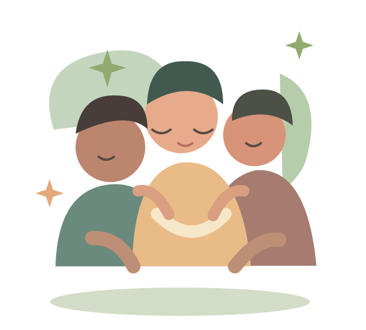

PEOPLE, PURPOSE, POSSIBILITY
Good things
happen together.
One gathering can spark something bigger. Find a local event, meet your people, and make room for good.

that matter.
WHAT'S HAPPENING
Find your kind of good.
THE KINDRED WAY
Show up.
Change something.
Whether you have an afternoon or a whole weekend, there is a place for you here.
Discover your eventExplore
Browse events by date, place or cause. Find what moves you.
Connect
Learn about the people, the purpose and the plans behind each gathering.
Make an impact
Come along and turn a shared moment into something meaningful.
ABOUT KINDRED
A place to find your people and your purpose.
Kindred is a fictional community charity project. Its mission is to help neighbours discover local gatherings that support the environment, learning, wellbeing and the arts. Each listing explains the cause, the event and its fundraising progress.
Contact example: hello@kindred.example
This address is illustrative and does not receive messages.
BETTER TOGETHER